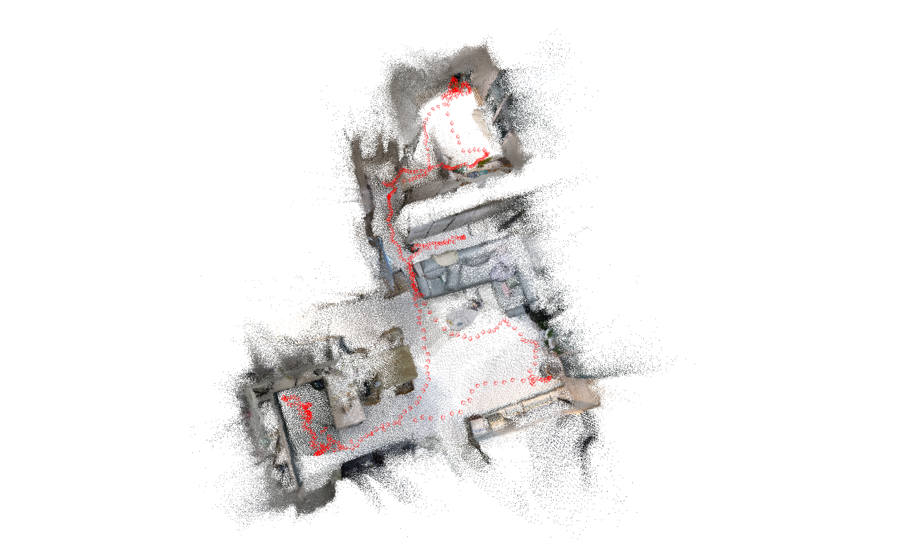

Visual SLAM
2022-Monocular camera-based visual SLAM for UAV mapping and navigation. The the main goal of this research is to improve the monocular SLAM results for urban and rural environments.
For our final pispeline, we take an existing solution called Droid SLAM, and further improve its architecture, pipeline and visualizer. We also integrated a custom segmentation model into our pipeline to filter object categories in the resulting point cloud.
I also went through the process of testing and performing qualitative analysis of various existing Visual SLAM solutions.
*I can not share UAV results and scripts due to company copyrights.
- Repository
- Official Droid SLAM Repository
- Platform
- Ubuntu / Windows / MacOS
- Stack
- PyTorch, Git, Docker, Open3D, Droid SLAM, Orbslam
